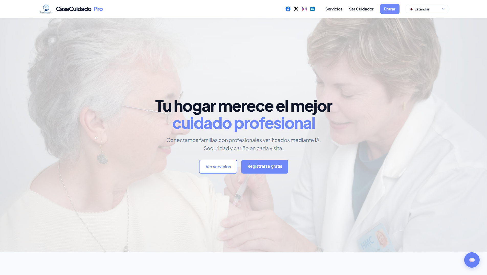
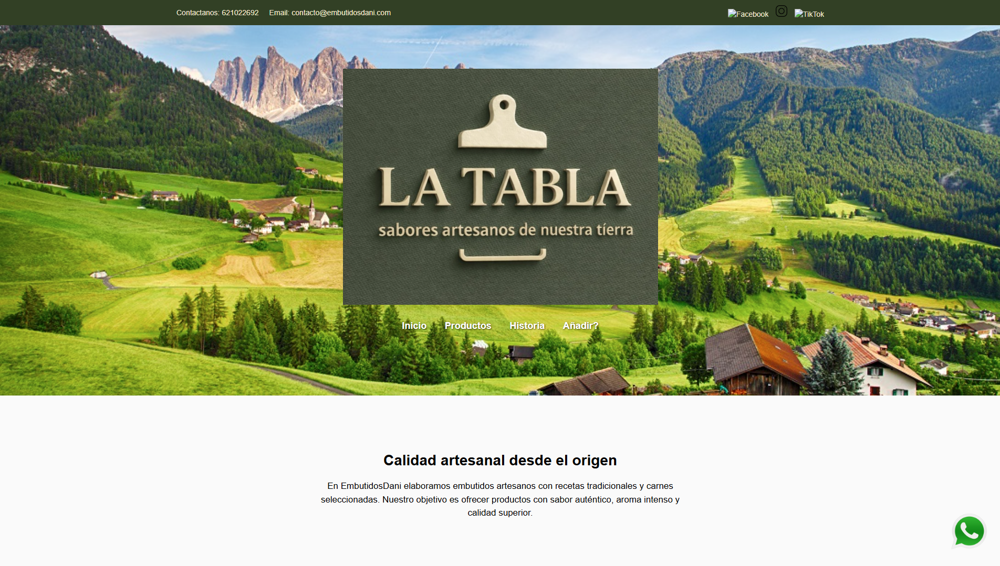
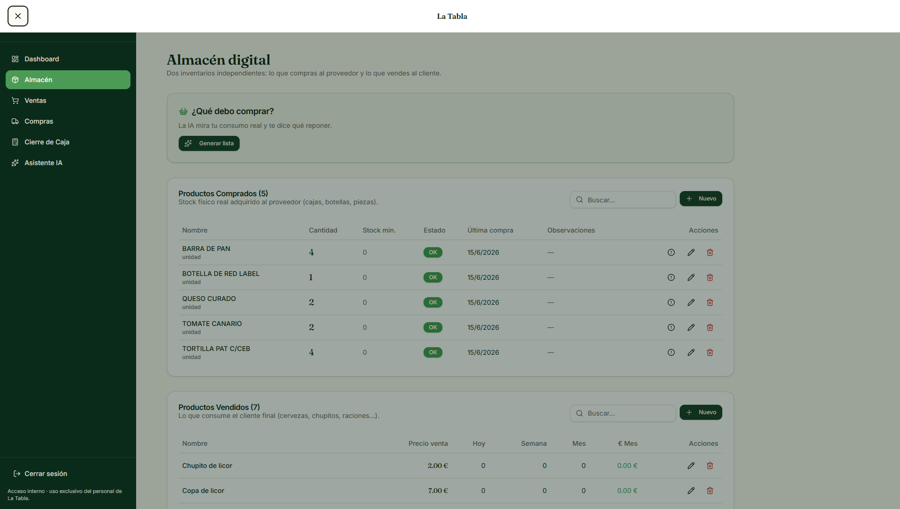

🚀 Soy un desarrollador joven con una enorme motivación por participar en proyectos que aporten y ayuden al mundo real en cualquier aspecto.
🎓 Tras finalizar mis estudios superiores me dedico a aprender y formarme continuamente, profundizando en lenguajes, buenas prácticas de programación, optimización de código y arquitectura de software. Actualmente cuento con conocimientos en desarrollo web y de aplicaciones utilizando HTML, CSS, JavaScript, Java, Kotlin, Python, PHP, Node.js, Angular, SQL, MySQL y PostgreSQL.
Además, tengo experiencia trabajando con Android Studio, Git, GitHub, WordPress, Shopify, diseño UI/UX, desarrollo responsive y herramientas de Inteligencia Artificial orientadas al aprendizaje y la mejora de procesos de desarrollo.
💡 Totalemente dispuesto a seguir creciendo profesionalmente, asumir nuevos retos y mejorar tanto mis habilidades técnicas como mi forma de trabajar en equipo y afrontar proyectos reales. Mi objetivo es evolucionar como desarrollador, aprender de cada experiencia y contribuir en entornos donde la tecnología tenga un impacto real en la vida de las personas.
Feb. 2026 – Mayo 2026 | Presencial

CasaCuidadoPro es una aplicación web desarrollada como Trabajo de Fin de Grado, orientada a la gestión y conexión entre cuidadores, familias y clientes que requieren servicios de asistencia. La plataforma permite el registro e inicio de sesión de usuarios, gestión de perfiles personalizados y búsqueda avanzada de cuidadores o clientes según necesidades específicas.
El sistema incluye un chatbot basado en Inteligencia Artificial, un sistema de valoraciones almacenadas en base de datos, y funcionalidades de filtrado y búsqueda inteligente. Además, integra páginas legales (privacidad, cookies y aviso legal) y modos de accesibilidad como daltonismo y alto contraste.
A nivel técnico, el proyecto ha sido desarrollado con arquitectura Front-end y Back-end, gestión de base de datos relacional, autenticación de usuarios, integración de IA y aplicación de buenas prácticas de programación, dando como resultado una plataforma escalable, funcional y orientada a un entorno real.

Desarrollo de una página web estática para un negocio real llamado “LaTabla”, un bar especializado en embutidos y productos gastronómicos, utilizando HTML y CSS. El proyecto está enfocado en la presentación digital del negocio, mostrando su carta, identidad visual y facilitando la comunicación con clientes.
La web incluye un botón de contacto directo vía WhatsApp disponible en todas las páginas, así como una página principal con la historia del bar, información del negocio y un mapa interactivo con su ubicación real. En la página de inicio también se muestran productos destacados para mejorar la visibilidad de la oferta.
Además, el sitio cuenta con una sección de productos de embutidos y carta completa del local, acompañada de imágenes reales de los productos. También incorpora páginas legales como cookies y términos legales. Se ha trabajado en el diseño web, estructura de contenido, experiencia de usuario y adaptación a dispositivos, creando una web atractiva, funcional y alineada con la imagen del negocio.

El Almacén Digital de LaTabla es un proyecto personal desarrollado por iniciativa propia con el objetivo de digitalizar y optimizar la gestión interna del negocio "LaTabla". La aplicación está siendo diseñada para centralizar la gestión de inventario, productos, stock, ventas y movimientos de almacén mediante una interfaz intuitiva y accesible adaptada a las necesidades reales del establecimiento.
El sistema busca sustituir procesos manuales por una solución digital. Para ello, incorpora una base de datos centralizada, interacción mediante texto y voz, así como herramientas basadas en Inteligencia Artificial que facilitan la búsqueda y modificación de información, el seguimiento de productos, la organización del almacén y la toma de decisiones basada en datos.
Además de cubrir necesidades reales del negocio, este proyecto me permite aplicar conocimientos de desarrollo Full Stack, UI/UX, bases de datos e integración de servicios de Inteligencia Artificial. Su desarrollo refleja iniciativa personal, capacidad de análisis y la motivación por crear soluciones tecnológicas que aporten valor y resuelvan problemas reales mediante software.
CEU FP Madrid
2024-2026Centro Concertado María Inmaculada Fuencarral
2022-2024Salesianos Estrecho - Colegio San Juan Bautista
2022He finalizado en 2026 mi Grado Superior en Desarrollo de Aplicaciones Multiplataforma, consolidando mis conocimientos en Front-end y Back-end, diseño UI/UX, desarrollo web y otras disciplinas clave del desarrollo de software.
Llevo aprendiendo de forma autodidacta desde 2021, comenzando con HTML y CSS, lo que despertó mi interés por el desarrollo Front-end. Posteriormente he ampliado mis conocimientos Back-end con tecnologías como JavaScript, Java, Kotlin, Python, Angular, SQL y MySQL, entre otras, construyendo una base sólida en desarrollo web y programación en general.
Si tienes alguna duda y/o quieres que forme parte de tu equipo, o participar en la realización de algún proyecto puedes contactarme directamente por correo.